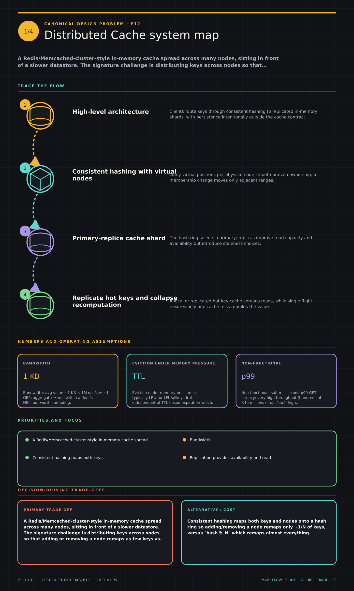

https://frosty110.github.io/js-drill/assets/system-design/infographics/design-problems/p12/overview.pngA Redis/Memcached-cluster-style in-memory cache spread across many nodes, sitting in front of a slower datastore. The signature challenge is distributing keys across nodes so that adding or removing a node remaps as few keys as possible — consistent hashing — while handling replication, eviction,.
A Redis/Memcached-cluster-style in-memory cache spread across many nodes, sitting in front of a slower datastore. The signature challenge is distributing keys across nodes so that adding or removing a node remaps as few keys as possible — consistent hashing — while handling replication, eviction, the hot-key problem, and cache-DB coherence.
All questions, model answers and diagrams for Design a Distributed Cache →